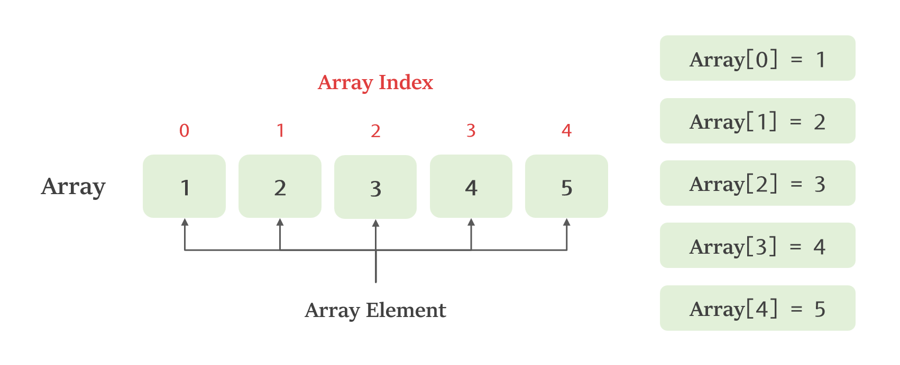

Array
| Category | Data Structure |
|---|---|
| References | References |
| Created | September 10, 2023 |
| Views |
什麼是陣列？
陣列（Array）是一種能夠儲存相同類型的元素集合的資料結構，可以把它想像成一個盒子，裡面可以裝很多東西，而這些東西都是相同類型的，比如說一堆數字或文字，它讓我們可以一次性管理很多相似的東西，而陣列中的元素可以透過索引（Index）來存取，索引通常是以0為起始。

陣列的特色
- 固定大小：一旦建立，陣列的大小通常是固定的，無法動態擴充或縮小。
- 相同類型的元素：陣列中的元素必須是相同類型，例如整數、浮點數、字串等。
- 連續的記憶體位置：陣列的元素在記憶體中是連續存儲的。
- 通過索引存取：可以通過索引來訪問和修改陣列中的元素。
- 效率高：由於元素的存儲位置是固定的，因此可以快速地存取陣列中的元素。
- 適合用於迭代：遍歷陣列中的所有元素通常是非常高效的。
陣列的常見操作
讀取元素
Python
numbers = [1, 2, 3, 4, 5]
print(numbers[2])讀取陣列中的第三個元素，得到的值為3
新增元素
Python
numbers = []
# 新增元素到List
numbers.append(1)
numbers.append(2)
numbers.append(3)在Python中，陣列是一個動態資料結構，可以根據需要動態增加元素
插入元素
Python
numbers = [1, 2, 3, 4, 5]
# 在第二個位置插入元素
insert_value = 6
insert_position = 1
numbers.insert(insert_position, insert_value)
print(numbers)
在Python中，可以使用insert方法在特定位置插入元素，新增後的陣列為[1, 6, 2, 3, 4, 5]
刪除元素
Python
numbers = [1, 2, 3, 4, 5]
# 刪除第三個元素 (索引從0開始)
delete_position = 2
del numbers[delete_position]
print(numbers)在Python中，可以使用del關鍵字來刪除陣列中特定位置的元素，刪除後的陣列為[1, 2, 4, 5]
陣列的應用場景
- 資料儲存：陣列可以用來儲存數據集合，例如：一系列的測試成績、用戶名單等。
- 迭代處理：陣列非常適合用於迭代，可以依次處理每個元素。
- 快速查找：如果知道元素的索引，可以很快地查找到該元素。
- 資料統計：可以通過陣列來執行各種統計操作，例如：計算平均值、找到最大值等。